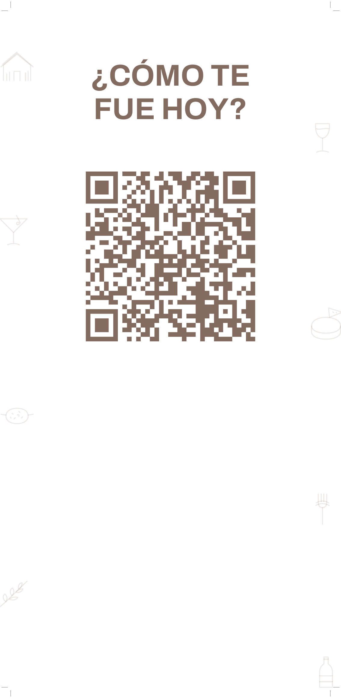
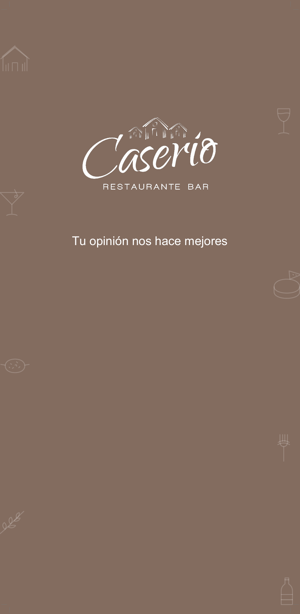
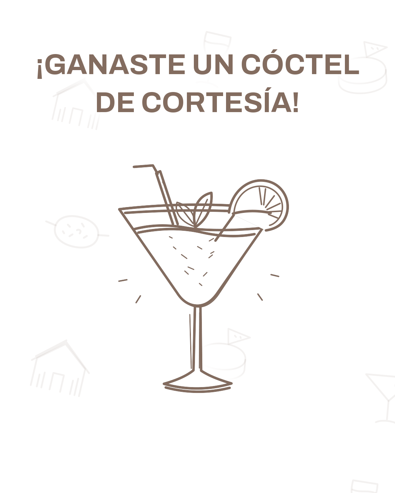

Tu hub digital
Todo tu material, en un solo lugar.
Todo lo que producimos
Tu carpeta de Google Drive: cada foto y cada video que hacemos para Caserío llega aquí.
Tu link en bio
La página para tu Instagram: carta, reservas por WhatsApp, cómo llegar y la encuesta. Ya puedes verla; se estrena en cream.pe/caserio/ junto con la nueva encuesta.
Tu carta virtual
Tu carta de octubre de 2026 completa, lista para compartir por WhatsApp o desde el link en bio.
La encuesta de tus clientes
Se abre con el QR: recoge nombre, WhatsApp, estrellas y comentario a cambio de un cóctel de cortesía; quienes califican con 5 estrellas pasan a Google para dejar su reseña.
La nueva encuesta ya está diseñada: suma cómo te conocieron, si es su primera vez y su cumpleaños. Empieza a guardar respuestas cuando la conectemos a tu hoja.
La tarjeta del porta cuenta
Va en el lateral del porta cuenta. El cliente escanea el QR y entra a la nueva encuesta. Se imprime cuando esa encuesta ya guarde respuestas.


Mide 90 × 190 mm; los 7 cm de abajo quedan dentro del bolsillo. Antes de imprimir confirmamos la medida de tu porta cuenta.
Tu panel
Tus números en vivo: cuántas personas respondieron y cómo te califican.
La primera vez te pide tu clave, que te mandamos por WhatsApp. Luego entras directo.
Todas las respuestas
La hoja de Google donde llega cada encuesta, con fecha, estrellas y comentario.
Si Google te pide acceso, solicítalo y te lo damos.
El premio por WhatsApp
Un cóctel de cortesía. Hoy se envía desde «Enviar cortesía» en la hoja de respuestas; con la nueva encuesta llegará solo por WhatsApp con esta imagen, y se reclama enseñando el mensaje.

Con la nueva encuesta, el plazo para reclamarlo será de 15 días.
El saludo de cumpleaños
La nueva encuesta ya pide el cumpleaños de cada cliente. Falta que elijas el regalo de la casa; con eso, un bot le escribe por WhatsApp siete días antes.
Lo que falta
Conectar la nueva encuesta a tu hoja y estrenar el link en bio, elegir el regalo de cumpleaños, medir tu porta cuenta para imprimir la tarjeta y conectar tu WhatsApp para que el premio llegue solo.